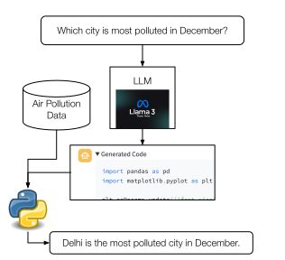
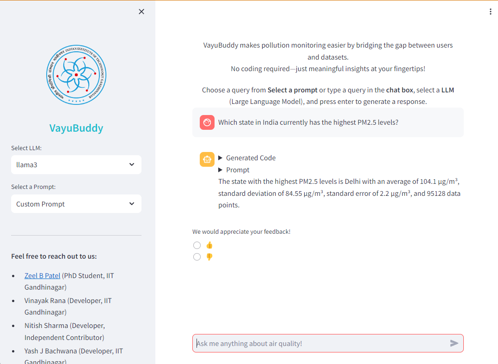

Nearly 6.7 million lives are lost due to air pollution every year. While policymakers are working on the mitigation strategies, public awareness can help reduce the exposure to air pollution.
Air pollution data from government-installed sensors is often publicly available in raw format, but there is a non-trivial barrier for various stakeholders in deriving meaningful insights from that data.
In this work, we present VayuBuddy, a Large Language Model (LLM)-powered chatbot system to reduce the barrier between the stakeholders and air quality sensor data.
VayuBuddy receives the questions in natural language, analyses the structured sensory data with a LLM-generated Python code and provides answers in natural language. We use the data from Indian government air quality sensors.
We benchmark the capabilities of 7 LLMs on 45 diverse question-answer pairs prepared by us. Additionally, VayuBuddy can also generate visual analysis such as line-plots, map plot, bar charts and many others from the sensory data as we demonstrate in this work.
Dataset
Central Pollution Control Board (CPCB), India. Covers 537 monitoring stations across 279 cities in 31 states. 7 years of PM2.5 data (2017–2023) resampled to daily averages.
Using the above theorem, probability statements about the sample mean can be approximated using a normal distribution. It’s the probability statements that are being approximated, not the random variable itself.
Flowchart of VayuBuddy System

Figure 3: Flowchart of the VayuBuddy Chatbot
Results
Table 1: Overall Performance of LLMs on all evaluation queries.
| Llama3.1 |
70B |
39 |
| Llama3 |
70B |
38 |
| Codestral |
22B |
29 |
| Mixtral |
56B |
26 |
| Llama3.1 |
8B |
23 |
| Llama3 |
8B |
21 |
| Gemma |
9B |
19 |
| Codestral Mamba |
7B |
19 |
| Mistral |
7B |
8 |
| Gemma |
7B |
7 |
Table 2: Performance of LLMs on different stakeholders.
| Llama3-70b |
19 |
15 |
16 |
20 |
24 |
| Mixtral |
15 |
11 |
11 |
15 |
14 |
| Gemma-7b |
2 |
2 |
6 |
6 |
4 |
| Llama3.1-70b |
20 |
16 |
16 |
20 |
24 |
| Codestral Mamba |
8 |
7 |
8 |
9 |
13 |
| Codestral |
14 |
12 |
15 |
18 |
19 |
| Mistral 7B |
5 |
3 |
3 |
3 |
5 |
| Llama3-8b |
11 |
7 |
11 |
14 |
15 |
| Llama3.1-8b |
10 |
8 |
12 |
13 |
17 |
| Gemma-9b |
8 |
7 |
12 |
13 |
12 |
We observe that in almost all cases LLMs were able to generate either errorless or faulty Python codes. We rarely see a case where any code is not generated.
Llama3 provides a good balance between code generation and general knowledge. Code based LLMs failed at questions which required prior information about lockdown and festival seasons, while models Gemma and Mistral lack pretraining on codes
Findings
For Question “Which state in India currently has the highest PM2.5 levels?”
-
Out of 4 models in the given bot, Llama3 and Gemini Pro gave the answers.
-
The findings showed different answers for the same question. Llama3 gave the answer as “Delhi”, while Gemini Pro gave the answer as “Maharashtra”.

Figure 4: Gemini Pro answer

Figure 5: Llama3 answer
-
Some observations revealed that the models could generate code for the question and also provide an answer.
-
For the above questions generated from ChatGPT, only two models, Llama3 and Gemini Pro, were able to answer.
-
The Llama3 model answered all questions correctly, which were generated by ChatGPT.
-
We observed that only the Llama3 model was able to generate graphs and map plots for related questions.
Media Coverage of VayuBuddy Chatbot
As a testament to its innovative design and real-world relevance, VayuBuddy has been featured in multiple newspaper articles. These articles provide insights into its applications, societal impact, and reception by users.